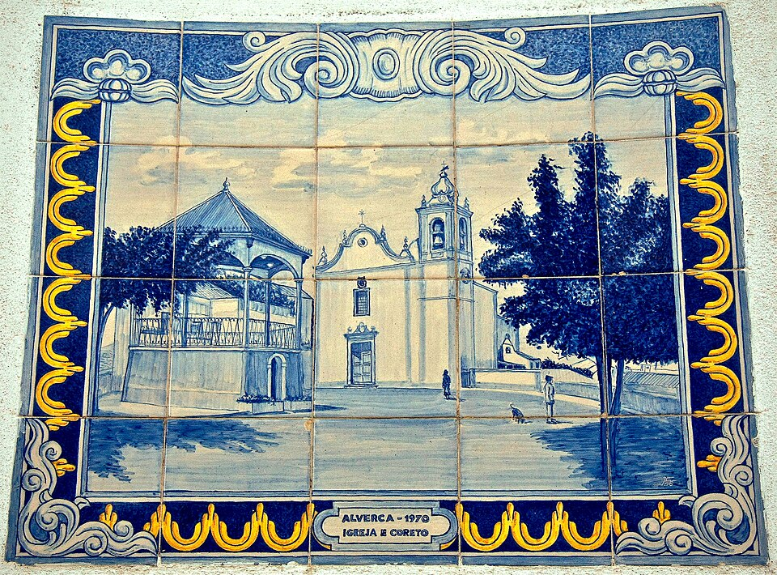
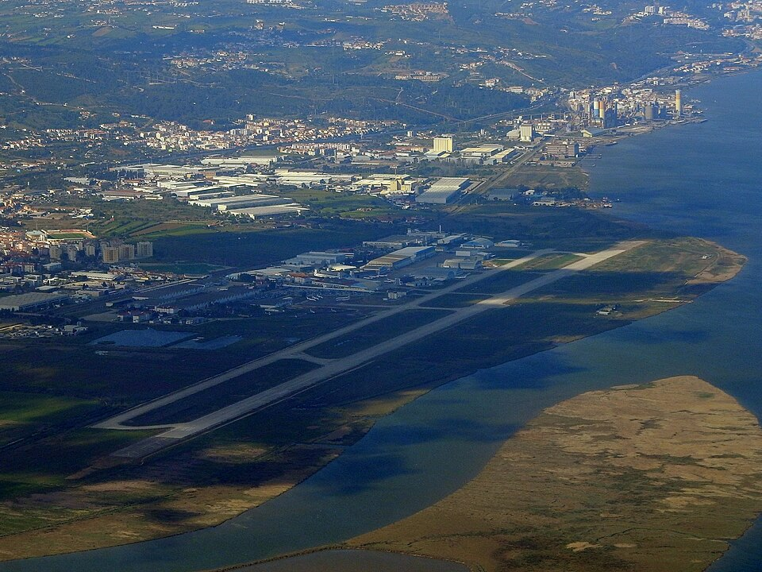
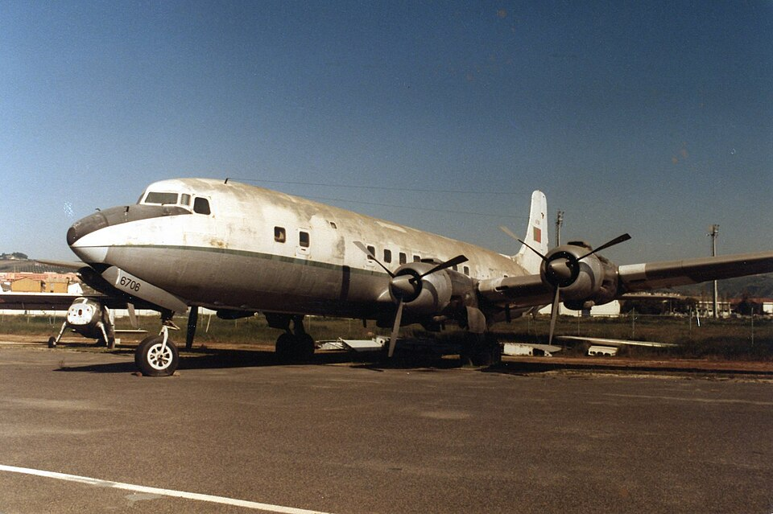

Informações
Consulte abaixo os principais dados geográficos e demográficos relativos à cidade de Alverca do Ribatejo, bem como algumas curiosidades históricas sobre a região.

| Demografia | População | 36.465 hab. |
|---|---|---|
| Densidade Populacional | 1.524,5 hab/km² | |
| Geografia | Área | 23,92 km² |
| Região / País | Lisboa / Portugal | |
| Website | www.cm-vfxira.pt | |


5 Curiosidades sobre Alverca do Ribatejo
- Berço da Aviação em Portugal: Alverca tem uma profunda ligação à aeronáutica, tendo acolhido desde 1918 o Parque de Material Aeronáutico e, posteriormente, as OGMA (Oficinas Gerais de Material Aeronáutico).
- Primeiro Aeroporto Internacional de Lisboa: Antes da existência do Aeroporto da Portela, o campo de aviação de Alverca serviu como o principal aeroporto da região de Lisboa durante as décadas de 1930 e 1940.
- Museu do Ar: A cidade acolheu durante décadas uma das principais sedes do Museu do Ar, preservando um vasto acervo de aeronaves, motores e documentos históricos da aviação civil e militar.
- Localização Privilegiada no Tejo: Fica situada na margem direita do rio Tejo, contando com a Reserva Natural do Estuário do Tejo no seu limite, uma das zonas húmidas mais importantes da Europa para aves migratórias.
- Futebol no Escalão Principal: O clube local, o Futebol Clube de Alverca (FC Alverca), já competiu na Primeira Liga do futebol português e é conhecido por ter formado vários jogadores de renome internacional.
Fotografias (Wikimedia Commons): Vitor Oliveira, CC BY-SA 2.0; Rehman Abubakr, CC BY-SA 4.0; Pete Macklin, CC BY 2.0.